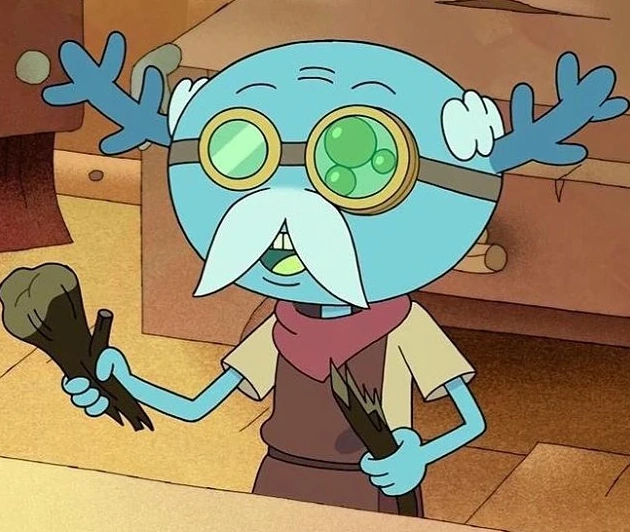

Los Ajolotes
Probablemente un animal que te llame la atencion, pero el ajolote es mas que solo eso.
El ajolote es conocido como el Peter Pan de las salamandras. Si bien la mayoría de los anfibios superan su fase acuática para comenzar su vida en tierra, el ajolote conserva en gran parte sus características larvales y pasa su vida adulta en el agua.
La historia de los ajolotes
La historia de Los ajolotes es interesante ya que fueron nombrados tras el dios azteca del fuego y el rayo, Xolotl, que podía adoptar la forma de una salamandra. Xolotl también está relacionado con perros, y "atl" es la antigua palabra azteca para decir "agua", por lo que "axolotl" a veces se traduce como "perro de agua".
La popularidad de los ajolotes
Dentro de los medios audio visuales se pueden encontrar muchos ajolotes, en series, videojuegos entre otros. como por ejemplo en la serie "Amphibia" con el personaje Leopold o en el video juego de nombre Ak-xolotl


La relacion con mexico
El ajolote o Axolotl tiene una relacion cercana con mexico principalmente por aparecerse mucho en ese pais, llegando a ser uno de sus animales representativos, ademas dentro de la historia antigua de mexico era muy apreciado por los mexicas pues su carne era sabrosa y preparaban distintos platillos con ella, además de utilizarla como remedio medicinal.